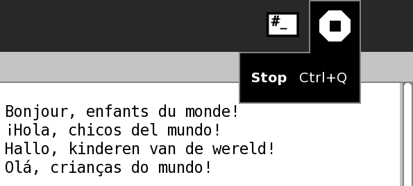

D'une Activité à une autre
Index
Installer des Activités
Mettre fin à une Activité
Vous pouvez mettre fin à une Activité de trois manières:
Cliquez sur l'icone Stop dans la barre d'outils de l'Activité.
Appuyez
ctrl + escape
.
Cliquez
Stop
, dans le menu déroulant, sur l'icône de l'Activité que vous voulez arrêter.
Utiliser l'icône Stop

Arrêter l'activité depuis le Cadre
D'une Activité à une autre
Index
Installer des Activités